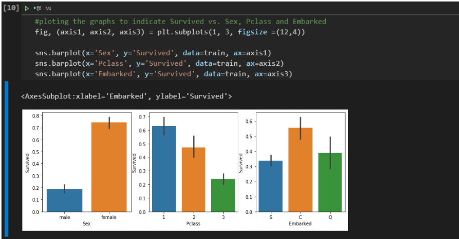
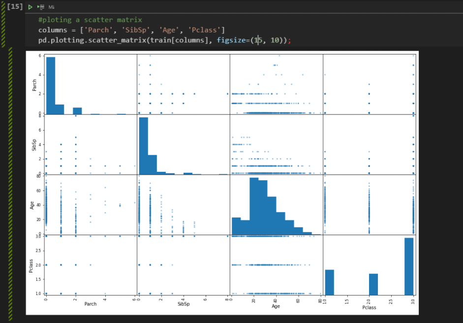
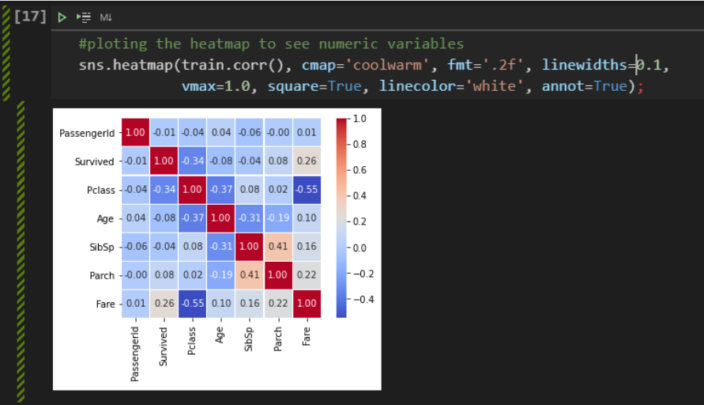
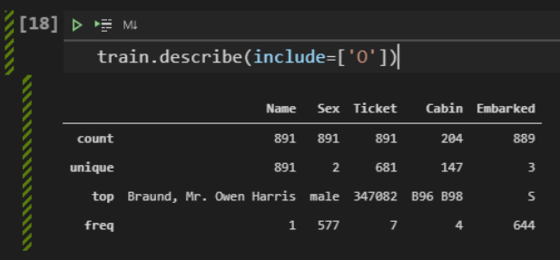

Which groups of people were most likely to survive?¶
From here, we can already test a hypothesis mentioned at the beginning: are women, in fact, more likely to survive the sinking of the Titanic? It is worth looking at the correlations and relationships between the variables, whether to decide which ones will go into a future model or to formulate new hypotheses.
{kind=link}
From the chart above, we have already been able to confirm two initial assumptions:
Women are much more likely to survive than men (75% vs. 18%);
Passengers in 3rd Class have less than half the chance of escaping disaster than passengers in 1st Class.
{kind=link}
Looking also at the age distribution of survivors and dead, we can see a peak on the survivors side for young children. The behavior of the two graphics is very similar, but this detail is very important, as it confirms the hypothesis that children also have a greater chance of surviving: “Children and women first!”.
We can take advantage of an interesting type of graphic from Pandas, the scatter_matrix.
{kind=link}
We can see that the advantage of using this graph is that we get a very useful information of its diagonal, which displays a histogram of each attribute. So we can see things like, for example, the fact that older people are more concentrated in first grade and younger people are more concentrated in third grade. Finally, finishing this first exploratory analysis step, we can analyze the heatmap to understand how the variables are correlated, positively or negatively.
{kind=link}
Another interesting thing is that the df.describe() method can also be used to visualize something about descriptive statistics in columns that are not numbers. To do this, just pass the include=[‘O’] argument.
{kind=link}
From these data, we can note that:
Values for Name are unique, one for each person;
There are no missing values for Name and Sex;
There are only male and female genders, with a higher frequency of males (577/891 = 65%);
The port in which the most passengers boarded is S = Southampton.
In this first step, we were able to become aware of the situation, understanding the problem, the main variables and starting to visualize the numerical variables.
Next, we will analyze the categorical variables in more detail. We’ll also cover missing values (NaN) and how to deal with them. We want to prepare the data to feed the model.